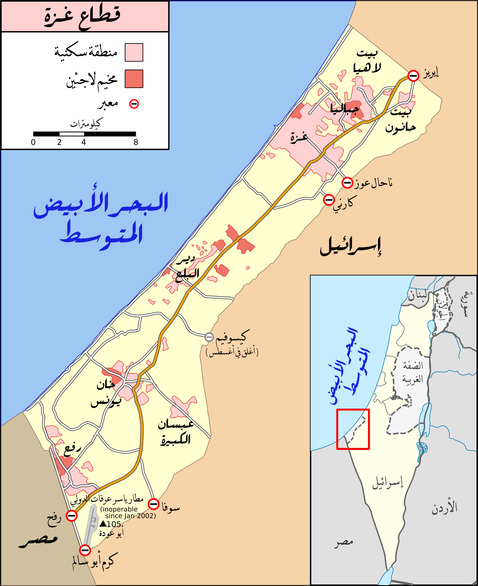
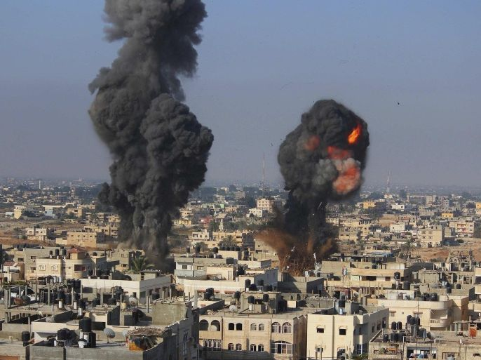

الحرب على غزة (2008–2009)
الهجوم على غزة ومجزرة غزة أو بقعة الزيت اللاهب أو معركة الفرقان كما تطلق عليها المقاومة الفلسطينية أو الحرب على غزة، أو عملية الرصاص المصبوب (بالعبرية: מבצע עופרת יצוקה مڤتسع عوفرت يتسوكه؛ حرفياً: عملية رصاص مسبوك/مُشكَّل بعد إذابته وصبه) كما يطلق عليها جيش الدفاع الإسرائيلي، هي عملية عسكرية ممتدة شنها الجيش الإسرائيلي على قطاع غزة في فلسطين من يوم 27 ديسمبر 2008 إلى 18 يناير 2009. تأتي العملية بعد انتهاء تهدئة دامت ستة أشهر كان قد تم التوصل إليها بين حركة المقاومة الإسلامية (حماس) من جهة وإسرائيل من جهة أخرى برعاية مصرية في يونيو 2008 وخرق التهدئة من قبل الجانب الإسرائيلي وعدم التزامه باستحقاقاته من التهدئة من حيث رفع الحصار الذي يفرضه على القطاع وبالتالي عدم قبول حماس لتمديد التهدئة. قبل انتهاء التهدئة في تاريخ 4 نوفمبر 2008 قامت إسرائيل، بخرق جديد لاتفاقية التهدئة، وذلك بتنفيذ غارة على قطاع غزة نتج عنها قتل ستة أعضاء مسلحين من حماس، ومنذ انتهاء التهدئة يوم الجمعة 19 ديسمبر 2008 قامت عناصر تابعة لحركتي حماس والجهاد الإسلامي في غزة بإطلاق أكثر من 130 صاروخاً وقذيفة هاون على مناطق في جنوب إسرائيل، بدأت العملية يوم السبت 27 ديسمبر 2008 في الساعة 11:30 صباحاً بالتوقيت المحلي، 9:30 صباحاً بتوقيت غرينيتش، وأسفرت عن مقتل 1417 فلسطينياً على الأقل (من بينهم 926 مدنياً و412 طفلاً و111 امرأة) وإصابة 4336 آخرين، إلى جانب مقتل 10 جنود إسرائيلين و3 مدنيين وإصابة 400 آخرين أغلبهم مدنيين أصيبوا بالهلع وليس إصابات جسدية حسب اعتراف الجيش الإسرائيلي لكن المقاومة أكّدت أنها قتلت قرابة 100 جندي خلال المعارك بغزة. وقد ازداد عدد شهداء غزة جرّاء العدوان الإسرائيلي على القطاع إلى 1328 شهيداً والجرحى إلى 5450 بعد أن تم انتشال 114 جثة لشهداء منذ إعلان إسرائيل وقف إطلاق النار.[3] أعلنت الحكومة الإسرائيلية أن العملية «قد تستغرق وقتاً ولن تتوقف حتى تحقق أهدافها بإنهاء إطلاق الصواريخ من غزة على جنوب إسرائيل»، فيما أعلنت حماس نيتها «متابعة القتال إلى أن توقف إسرائيل هجماتها وتنهي الحصار المفروض على القطاع». كان اليوم الأول من الهجوم اليوم الأكثر دموية من حيث عدد الضحايا الفلسطينيين في يوم واحد بالحرب؛ إذ تسبب القصف الجوي الإسرائيلي في مقتل أكثر من 200 فلسطينياً وجرح أكثر من 700 آخرين، مما أدى إلى تسمية أحداث اليوم الدامية بـمجزرة السبت الأسود في وسائل الإعلام. الأوضاع قبل بدء العمليات العسكرية
الحرب على غزة 2012
كانت الحرب على غزة 2012 التي أطلقت عليها إسرائيل اسم عملية عامود السحاب حرب استمرت ثمانية أيام شنها جيش الدفاع الإسرائيلي على قطاع غزة الذي تسيطر عليه حماس، وبدأت في 14 نوفمبر 2012 بقتل أحمد الجعبري، رئيس الجناح العسكري لحماس في غزة نتيجة غارة جوية إسرائيلية. وسبق العملية فترة شهدت عددا من الهجمات الإسرائيلية – الفلسطينية المتجاوبة. ووفقا للحكومة الإسرائيلية، بدأت العملية ردا على إطلاق أكثر من 100 صاروخ على إسرائيل خلال فترة 24 ساعة، وهجوم شنه محاربو غزة على سيارة جيب تابعة لدورية عسكرية إسرائيلية داخل الحدود الإسرائيلية، وانفجار ناجم عن عبوات ناسفة وقعت بالقرب من الجنود الإسرائيليين على الجانب الإسرائيلي من نفق يمر تحت الجدار الإسرائيلي في الضفة الغربية. وذكرت الحكومة الإسرائيلية أن أهداف العملية العسكرية هي وقف الهجمات الصاروخية على أهداف مدنية منشؤها قطاع غزة وتعطيل قدرات المنظمات المسلحة. ألقى الفلسطينيون باللوم على الحكومة الإسرائيلية في تصاعد وتيرة العنف، واتهموا قوات الدفاع الإسرائيلية بشن هجمات على المدنيين في قطاع غزة في الأيام التي سبقت العملية. وأشاروا إلى الحصار المفروض على قطاع غزة واحتلال الضفة الغربية، بما فيها القدس الشرقية، كسبب للهجمات الصاروخية. خلال العملية، زعم جيش الدفاع الإسرائيلي أنه ضرب أكثر من 1,500 موقع في قطاع غزة، بما في ذلك منصات إطلاق الصواريخ، ومستودعات الأسلحة، والمرافق الحكومية، والكتل السكنية. ووفقاً لتقرير صادر عن مفوضية شؤون اللاجئين، قُتل 174 فلسطينياً وأصيب مئات. وتشردت العديد من الأسر. قتلت ضربة جوية واحدة عشرة أفراد من عائلة الدلو. وحدثت بعض الإصابات الفلسطينية نتيجة للإطلاق الخاطئ للصواريخ الفلسطينية التي سقطت داخل قطاع غزة. وأعدم أعضاء كتائب عز الدين القسام ثمانية فلسطينيين لزعمهم أنهم تعاونوا مع إسرائيل. وخلال العملية، زادت حماس، وكتائب القسام وحركة الجهاد الإسلامي الفلسطيني من تكثيف هجماتهما الصاروخية على المدن والبلدات الإسرائيلية، في رمز عملية سمتها كتائب القسام عملية حجارة سجيل، وأطلقت أكثر من 1,456 صاروخًا على إسرائيل، و142 صاروخا إضافيًا وقع داخل غزة نفسها. استخدمت الجماعات المسلحة الفلسطينية عدة أنواع من الأسلحة ومنها صواريخ فجر-5 إيرانية الصنع، وصواريخ غراد روسية الصنع، والقسام، ومدافع الهاون. وقد أُطلقت بعض هذه الأسلحة على مدن ريشون لتسيون، بئر السبع، أسدود، عسقلان، وغيرها من المراكز السكانية. وكانت تل أبيب قد ضربت للمرة الأولى منذ حرب الخليج عام 1991 وأطلقت الصواريخ على القدس أيضًا. قتلت الصواريخ ثلاثة مدنيين إسرائيليين في ضربة مباشرة على منزل في كريات ملاخي. وبحلول نهاية العملية، قُتل ستة إسرائيليين، وأصيب مائتان وأربعون، وعالجت نجمة داود الحمراء ما يزيد عن مائتي شخص بسبب الهلع. اعترض نظام القبة الحديدية الإسرائيلي للدفاع الصاروخي حوالي 421 صاروخًا، وسقط 142 آخر على غزة نفسها، وسقط 875 في مناطق مفتوحة، و58 ضرب منطقة حضرية في إسرائيل. فجّر عربي إسرائيلي حافلة في تل أبيب، مما أسفر عن إصابة 28 مدنيًا. أعربت كندا وألمانيا والمملكة المتحدة والولايات المتحدة ودول غربية أخرى عن تأييدها لما اعتبرته حق إسرائيل في الدفاع عن نفسها أو دانت هجمات حماس الصاروخية على إسرائيل. وقد أدانت الصين وإيران وروسيا ومصر وتركيا والعديد من الدول العربية والإسلامية الأخرى العملية الإسرائيلية. عقد مجلس الأمن التابع للأمم المتحدة جلسة طارئة حول الوضع لكنه لم يتوصل إلى قرار. وبعد أيام من المفاوضات بين حماس وإسرائيل، أعلن في 21 نوفمبر وقف إطلاق النار الذي توسطت فيه مصر. وقد أعلن كل من الطرفين فوزه. وقالت إسرائيل إنها حققت هدفها في شل قدرة حماس على إطلاق الصواريخ، في حين أكدت حماس أن خيار إسرائيل لغزو غزة قد انتهى. ووفقا لهيومن رايتس ووتش، فإن كلا الجانبين انتهكا قوانين الحرب خلال القتال. علم الاشتقاق على الرغم من أن الاسم الإنجليزي الرسمي للعملية هو عمود الدفاع، فإن الاسم العبري يُترجم على أنه عمود السحاب. أوضح إيتان بوخمان، رئيس مكتب الإعلام في أمريكا الشمالية بالجيش الإسرائيلي، أن هذا الاستخدام يشير إلى عَمُود السّحَاَبْ في الكتاب المقدس الذي حمى الإسرائيليين أثناء التيه وأرشدهم إلى أرض الميعاد (Exodus 13:21–22). يشرح الكتاب المقدس العبري والعهد الجديد القصة بالتفصيل، موضحين أن عمود السحاب كان يحمي الإسرائيليين من سهام المصريين ومنجنيقهم. وبالتالي، فإن هذا القياس أرادته إسرائيل لينطبق على جيش الاحتلال الإسرائيلي، الذي قام بحماية المواطنين الإسرائيليين من الهجمات الصاروخية. الخلفية
الحرب على غزة 2014
الحرب على غزة 2014 هو نزاع عسكري بين إسرائيل وحركات المقاومة الفلسطينية في قطاع غزة بدأ فعلياً يوم 8 يوليو 2014 والتي أطلق عليها الجيش الإسرائيلي عملية الجرف الصامد وردت كتائب عز الدين القسام بمعركة العصف المأكول وردت حركة الجهاد الإسلامي بعملية البنيان المرصوص بعد موجة عنف تفجرت مع خطف وتعذيب وحرق الطفل محمد أبو خضير من شعفاط على أيدي مجموعة مستوطنين في 2 يوليو 2014،، وإعادة اعتقال العشرات من محرري صفقة شاليط، وأعقبها احتجاجات واسعة في القدس وداخل عرب 48 وكذلك مناطق الضفة الغربية، واشتدت وتيرتها بعد أن دهس إسرائيلي اثنين من العمال العرب قرب حيفا، وتخلل التصعيد قصف متبادل بين إسرائيل والمقاومة الفلسطينية في قطاع. تخلل هذه الحرب عدة عمليات عسكرية مثل عملية ناحل عوز وعملية العاشر من رمضان. وكان الهدف المعلن من العملية الإسرائيلية هو وقف إطلاق الصواريخ من غزة إلى إسرائيل، التي ازدادت بعد الحملة الإسرائيلية ضد حماس في الضفة الغربية في أعقاب عملية اختطاف وقتل ثلاثة مستوطنين إسرائيليين في 12 حزيران / يونيه 2014 من قبل حركة حماس. على العكس من ذلك، كان هدف حماس هو الحصول على الضغط الدولي لرفع الحصار الإسرائيلي على قطاع غزة، وإنهاء الهجوم الإسرائيلي، والحصول على طرف ثالث لمراقبة وضمان الامتثال لوقف إطلاق النار، وإطلاق سراح الأسرى الفلسطينيين والتغلب على حالة الانعزال السياسي المفروة على الحركة. يدعي البعض أن إسرائيل كانت أول من كسر اتفاق وقف إطلاق النار مع حماس في 13 يونيو، والذي كان قائمًا منذ نوفمبر 2012. ومع ذلك، ذكرت إسرائيل أن الغارات الجوية على غزة كانت بمثابة رد فعل لإطلاق الصواريخ من قطاع غزة. وفي 7 يوليو / تموز، وبعد مقتل سبعة من نشطاء حركة حماس في انفجار نفق في خان يونس، الذي نجم عن غارة جوية إسرائيلية (وفقًا لكل من حماس وناثان ثرال، وبي بي سي، ومسؤول كبير بجيش الدفاع الإسرائيلي) أو انفجار عرضي للذخيرة (وفقًا لجيش الدفاع الإسرائيلي))، تحملت حماس المسؤولية عن إطلاق الصواريخ على إسرائيل، إذ أطلقت 40 صاروخًا باتجاه إسرائيل. بدأت العملية رسميًا في اليوم التالي، وفي 17 يوليو، تم توسيع العملية لتشمل الغزو الإسرائيلي لقطاع غزة بهدف تدمير نظام الأنفاق في غزة؛ ثم انسحبت القوات البرية الإسرائيلية في 5 أغسطس. وفي 26 آب / أغسطس، أُعلن وقف إطلاق نار مفتوح. وبحلول ذلك التاريخ، أفاد جيش الدفاع الإسرائيلي أن حماس وحركة الجهاد الإسلامي وجماعات مسلحة أخرى أطلقت 4564 صاروخًا وقذائف هاون من قطاع غزة إلى إسرائيل، وتم اعتراض أكثر من 735 مقذوف أثناء القتال وإسقاطه بواسطة القبة الحديدية. أصابت معظم قذائف الهاون والصواريخ التي أُطلقت من غزة أراضٍ مفتوحة. بينما أصابت أكثر من 280 قذيفة مناطق متفرقة من غزة، وأصاب 224 منها مناطق سكنية. كما قتلت القذائف 13 مدنيًا من غزة، من بينهم 11 طفلًا. وهاجم الجيش الإسرائيلي 263 5 هدفًا في غزة؛ وتم تدمير ما لا يقل عن 34 نفق معروف ، ونفذت ثلثا ترسانة حماس البالغ عددها 10 آلاف صاروخ أو دُمرت. الخلفية